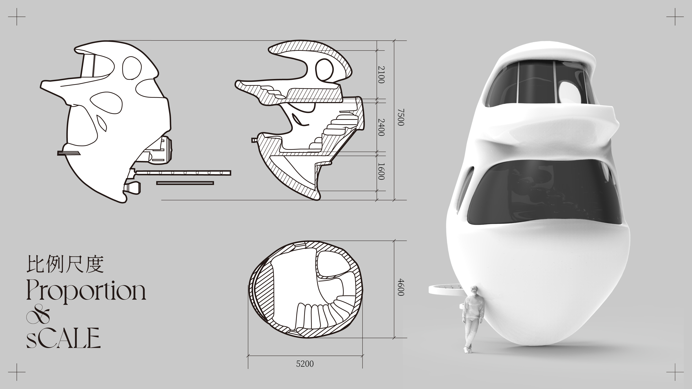
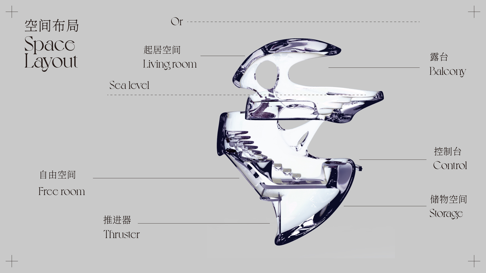
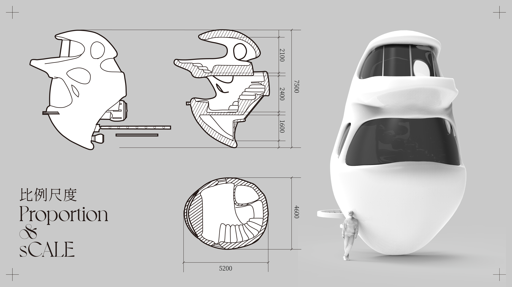
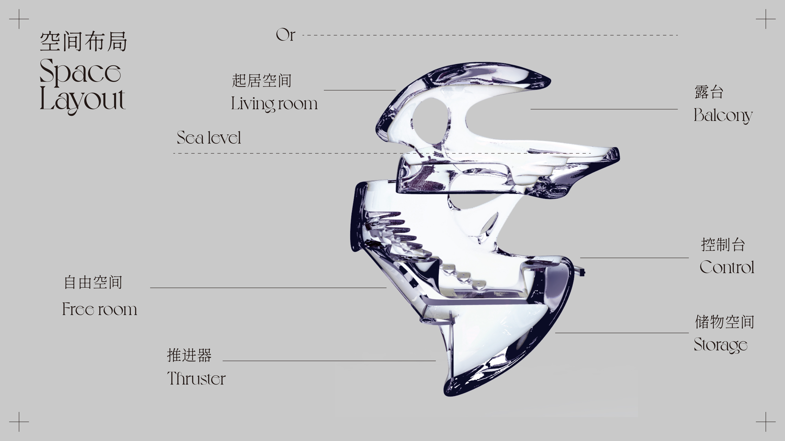
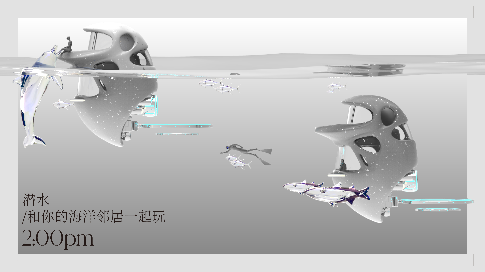
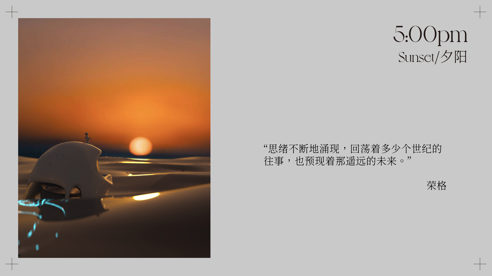
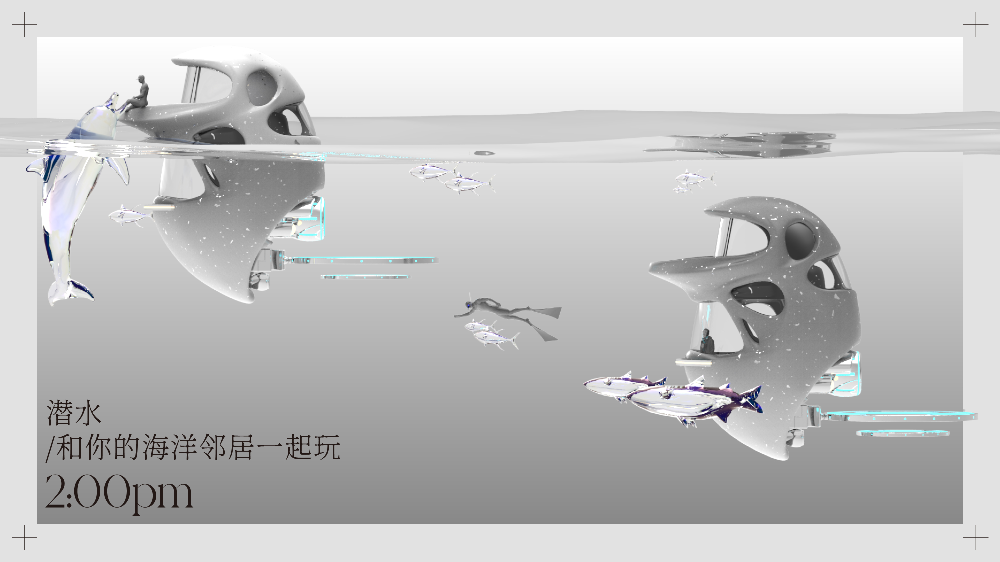
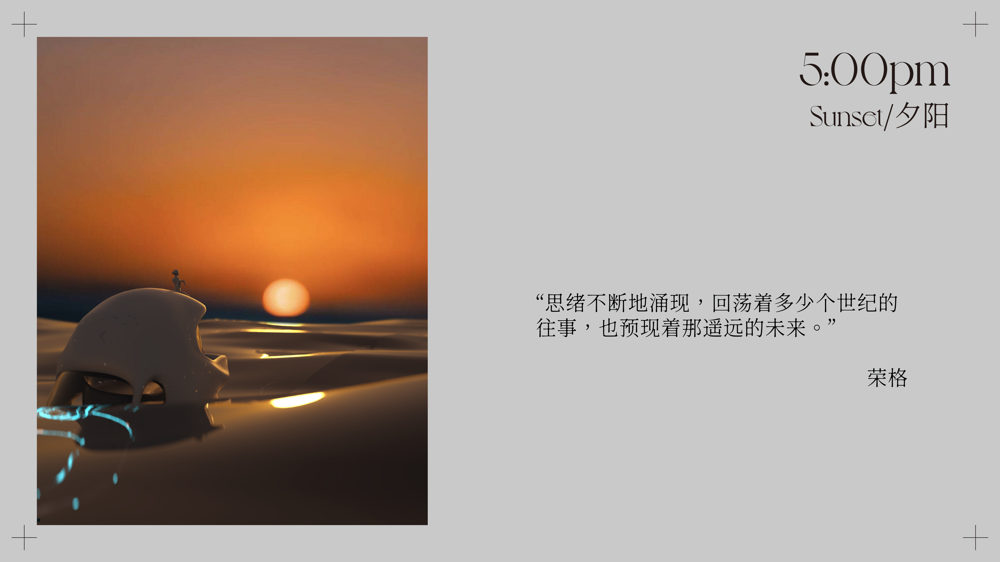

AQUA SOLITARY
海洋隐士计划
Year:2021
Project Theme: 未来水下载具
Team members: 陈鸣惊 熊天琦 潘泓浠 李心瑜
Project Theme: 未来水下载具
Team members: 陈鸣惊 熊天琦 潘泓浠 李心瑜
由于科技的高度发达，互联网和社交媒体过度饱和，社交网络无孔不入。网络时代带来的碎片化信息切割着人们的时间，快节奏的城市生活带来了无尽的焦虑，身处其中的人们精神状态被异化，只剩下无尽的空虚和自我怀疑。一部分人开始试图逃离，逃离被陆上城市所强加的过度掌控，试图重新找回自我和人生的意义。
“Aqua Solitary”计划给想要离开的人们一个脱离城市进入海洋的渠道，无论是“逃离者”、“幻想者”、“孤独者”还是”修行者”，都能在这个摆脱互联网和烦人陆上社交的环境中得到与自己更近的机会。在这里人们可以尽情的感受自然的美好，与海洋生物成为邻居、或许还能成为朋友。我们希望，在远离人世纷扰的这段时光里，让隐士体验者能够获得一段属于自己的深入思考的体验，以帮助他们理清纷乱的思绪，破除迷茫的雾障，找到属于自己的答案。
逃离是否能发生，最终将取决于你自己。
 

 
